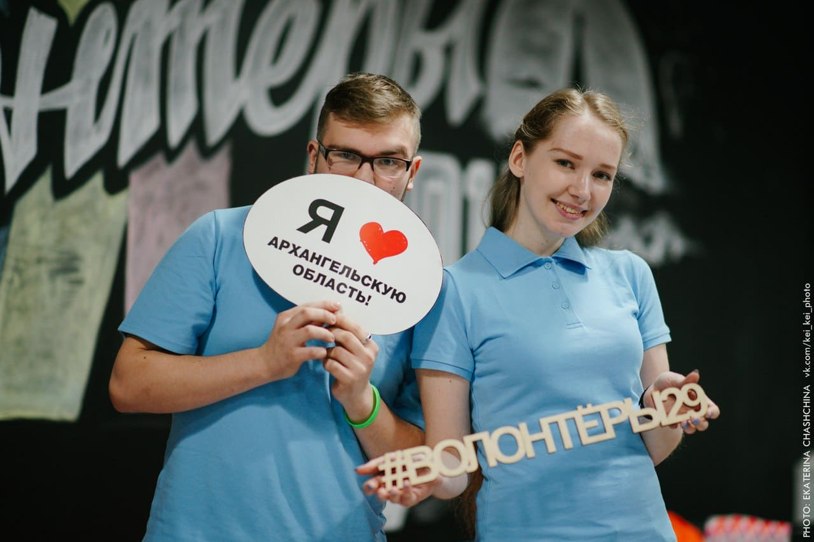

1. Во-первых, это возможность увидеть другой мир. Некоторые международные организации ищут волонтеров в любой точке света и ваши профессиональные или интеллектуальные способности могут пригодится на другом конце Земли. Так что это прекрасная возможность попутешествовать и набраться впечатлений, опыта и знаний. И да, путешествие на соседнюю улицу, где находится питомник для собак или центр помощи онкобольным – это тоже открытие целого мира. Другого, но не менее важного.
2. Это возможность сильно поменять привычную обстановку и род деятельности, сломать стандартную схему существования. Иногда это бывает жизненно необходимо. Это одна из самых частых причин, по которой диспетчер таксопарка идет в детский дом печь пироги, а офисный работник отправляется в лес искать пропавшую бабушку.
3. Волонтерство позволит (и даже заставит!) вас знакомится с людьми и общаться. Это может быть интересно, по-настоящему живо и не скучно, а главное, очень полезно. Добровольческие бригады сводят удивительно разный народ, мужчин и женщин, которые в других обстоятельствах никогда бы не встретились. Это очень уникальный опыт.
4. Когда человек делает что-то как волонтер, то чувствует, что занимается правильным делом. Независимо от того, чем вы занимаетесь и что любите – это нужное чувство.
5. В минуты депрессии и самобичевания люди, которые занимаются волонтерством, понимают: они не зря живут на этом свете. Звучит грубо, но бескорыстная помощь другим удовлетворяет базовую потребность человека чувствовать себя хорошим.
6. Любой человек должен помогать тем, кто нуждается в помощи, если у него есть возможность. Для многих это аксиома. Поэтому волонтерство для них — способ выполнить эту обязанность.
7. Находиться среди людей, которые тратят свое время на волонтерство, радостно. Они не святые, не альтруисты, не блаженные, не идеальные, у них очень разный характер и мотивы, но при этом есть одна общая черта: они неравнодушны. Хорошо, полезно и приятно находиться в обществе неравнодушных людей.
8. Волонтеры меняют жизнь к лучшему. Доброволец — солдат огромной армии добра, которая растет с каждым днем. Именно волонтеры добиваются того, чего раньше в нашей жизни не было. Обращают внимание общества на то, мимо чего оно до этого равнодушно проходило мимо. Никогда прежде у нас не навещали стариков в домах престарелых, не ходили играть к детям-инвалидам, не тушили лесные пожары, не дарили любовь бездомным собакам в приютах. Это означает, что одиноким дедушкам, особенным детям, бездомным животным и многим другим стало жить немного легче.
9. Волонтерская деятельность очень разнообразна, каждый может найти в ней то, что ему по вкусу. Кому-то нравится возиться с животными, у кого-то получается хорошо общаться с детьми, кому-то нравится романтика ночных поисков, а кто-то болеет душой за стариков. Всегда есть возможность себя реализовать.
10. Волонтерство помогает бороться с собственными страхами. Учит не только по-другому относиться к болезни, смерти, жизни, но и правильно общаться с людьми в непростой ситуации. Не бояться детей с ограниченными возможностями, не отводить глаза от инвалида, не понимая, как себя вести, а уметь протянуть руку помощи.
11. Это хороший пример для подрастающего поколения. Научить добру невозможно. Его можно только привить. А когда дети видят, что их родители регулярно безвозмездно помогают кому-то, делятся тем, что у них есть, с чужими людьми, то творить добро становится чем-то совершенно естественным. Нормой.